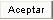
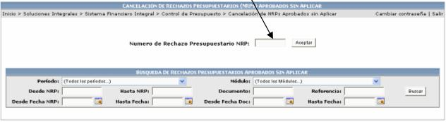
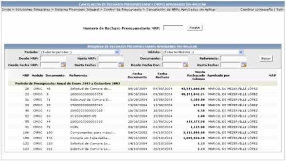
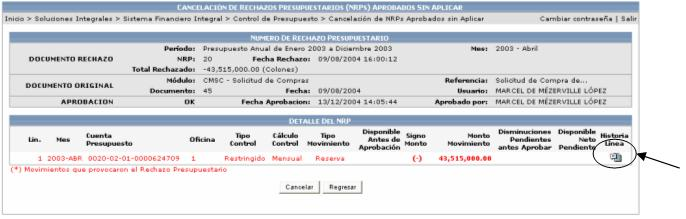
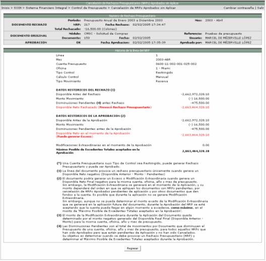
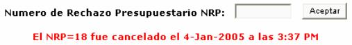

Una vez que se ha aprobado un NRP, el mismo se puede cancelar, debido a varios motivos, uno de ellos puede ser por ejemplo, el que ya no se quiera ocupar la plata que se reservó y dicha cantidad de dinero, vuelve al disponible.
Para seleccionar un rechazo específico, se debe de digitar el número de rechazo y presionar el botón de

.

El sistema también permite la búsqueda de varios rechazos presupuestarios, utilizando diferentes filtros de búsqueda, como lo son: el periodo, el módulo de donde proviene, por rango de fechas (NRPs / documentos), por rango de NRPs, por número de documento o por una referencia. Si se utiliza este tipo de búsqueda se presentará una lista con los resultados de búsqueda y si se desea ver el detalle de ellos se debe presionar la línea deseada.

El sistema le mostrará la información detallada del número de rechazo presupuestario, así como también la información del documento original, donde se indicará el módulo de donde proviene, el número de documento, la fecha, la referencia y el usuario que realizó dicho documento.

Al presionar el ícono
 se despliega una pantalla con el detalle de la línea
que generó el rechazo presupuestal:
se despliega una pantalla con el detalle de la línea
que generó el rechazo presupuestal:

Además si se busca un rechazo presupuestario y este ya fue cancelado, el sistema le desplegará el siguiente mensaje, indicándole el día de la cancelación y la hora.

Cuando se cancela uno de estos registros, el sistema lo que realizará será CANCELAR el documento de reserva o cualquier otro que haya solicitado presupuesto, devolviendo el monto reservado al disponible.